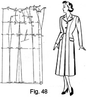

Early 1940's—Ladies' Garment Cutting and Making
by
F. R. Morris
Chapter VII—The Construction of Patterns for Long Coats
THE system used for drafting long-coat patterns is identical in constructional points with the short-coat basis with the exception of increased armhole size, a slightly wider sleeve and additional ease if the garment is required for special purposes.
Design in long coats may be divided into two sections, the "dressy" type of town coat, lavishly trimmed with fur and elaborately designed, and the strictly tailored styles comprising plain panelled coats, heavier belted ulster wrap coats in nap or camel-hair cloth, and loose-fitting garments of the raglan and drop-shoulder type.
The "dressy" styles are usually worn over a dress and may be closer in fit than the other type, which may on some occasions serve as a covering for a costume, therefore necessitating an addition of size for the needed roomier accommodation, though all women seem to expect a coat sufficiently easy to enable them to wear a cardigan or short jacket underneath in the cold weather. The "tailored" long coat of the old days has very nearly disappeared—at any rate, among the trade catering for the younger generation—except in the sense that "tailored" is more a description of the workmanship than a delineator of style. To-day, design is all-important, not fussy trimming effect, but design that has line and emphasizes the good points of the figure. The old conception of a "tailored coat" was something after the style of an elongated costume jacket, yet to-day the younger generation are critical of stereotyped designs and enthusiastic over new ideas. They demand originality of style and are quick to appreciate line and good cutting, even if the design is restrained in character. A severe line, well cut, is considerably more flattering to the wearer than a style overburdened with fancy strappings and trimmings that are the "latest" fashion. A greater effect can be achieved by simple means than by elaboration; a perfect fit needs no intricate designing in order to attract notice.
Women generally do not mind a severe or plain design as long as there is some redeeming feature such as ultra-modern lapels, an original front fastening or a sleeve with an original cut. To-day they are catered for as never before; the interest in sports has introduced a new element into line. Special clothes for spectators at sports meetings have a "line" and style all their own, very suitable to the young, and flattering to the women of advancing years.
It is not proposed to illustrate many designs in this chapter, only the styles that are sure of being repeated every year and remain static in design.
The first design will be a plain panelled coat with heavy lapels and a deep collar. Slanting pockets are placed on the hips, and the fronts fasten with three buttons. The length may either be full length or seven-eighths; the latter length is the more fashionable at the moment.
Double-Breasted Panel Long Coat (Fig. 45)
The draft is arranged to agree with the measures of a 34-inch bust figure as a preliminary example. Full measures are as follows—
- Chest = 32 inches.
- Bust = 34 inches.
- Waist = 25 inches.
- Hips = 36 inches.
- Natural waist length = 15 inches.
- Full length = 45 inches.
- Half-back width = 6½ inches.
- Sleeve length = 29 inches.
- Working scale = half the bust girth = 17 inches.
To draft—
Commence by drawing line X to X, equal to the full length of the coat, i.e. 45 inches.
- 1 from X = one-third of the scale plus 1¾ inches.
- 2 from X = the natural waist length = 15 inches.
- 3 from 2 = 8 inches down for the hip level.
- 4 from X = one-sixth of the scale less ¼ inch.
- 5 from 4 = 1 inch. Shape from 5 to X for the back-neck run.
- 6 from 1 = the half-back width plus ¼ inch.
- Square up from 6 to 7.
- 8 from 1 = half the bust measure plus 2 inches.
- 9 from 8 = 1 to X at the back.
- 10 from 9 = one-twelfth of the scale.
- 11 from 10 = one-sixth of the scale.
- 12 from 8 = half the scale less ¾ inch.
- 13 from 12 = one-sixth of the scale. Square up from 13 to 14 equal to 8 to 10 less ½ inch.
- 15 is midway 6 and 12.
- 16 from 15 = one-third of the scale plus ¼ inch.
- Join 16 to 5 and 14.
- 17 is located where the line from 16 to 5 is intersected by line 6 to 7.
- 18 from 17 = ½ inch. Shape the back shoulder seam from 18 to 5 as shown.
- 19 from 14 = 5 to 18 less ½ inch.
- Shape the scye as shown, lowering ½ inch below the breast line level at 20 and 21.
- Square down from 8 to 22.
- 23 from 22 = ¼ inch. Mark the front centre line from 8
to 23, 24 and 25.
- The addition of this extra at the fronts is to give stride room and prevent the coat from winging away.
- Square down from 15 to 26, 27 and 28.
- 29 and 30 from 26 = 3/8 inch each.
- Overlap at 31 and 32 from 27 half the difference between the bust and hip measures less ½ inch.
- 33 from 28 = 27 to 32 plus 1½ inches.
- 34 from 28 = 31 to 27 plus 1½ inches.
- Shape the sideseams from 15 to 30, 31 and 34, and from 15 to 29, 32 and 33.
- 35 from 2 = half the waist measure plus 2¾ inches.
- 36 from 5 = 3½ inches.
- 37 from 2 = one-sixth of the scale plus ½ inch.
- 38 from 1 = 37 from 2 plus 1 inch.
- 39 from 3 = 37 to 2 plus ½ inch.
- 40 from X = 37 to 2 plus 1 inch.
- Shape the back panel seam from 36 to 38, 37, 39 and 40.
- 41 from 38 = ½ inch.
- 42 from 37 = two-thirds of the waist surplus shown at 35 to 22.
- 43 from 39 = ¼ inch.
- 44 from 40 = ¾ inch. Shape the back panel seam from 36 to 41, 42, 43 and 44.
- 45 is midway 12 to 8.
- 46 from 45 = 2 inches.
- 47 from 23 = 4 inches.
- 48 from 24 = 4 inches.
- 49 from 25 = 4 inches.
- Shape the front panel seam from 14 to 45, 46, 47, 48 and 49.
- 50 from 14 = 14 to 11, pivoted from 46.
- Shape from 46 to 50 as shown for the bust dart.
- Add on 4 inches to 51 and 52 for the double-breasted front overlap.
- 53 from 25 = ¾ inch. Shape the bottom edge run from 53 to the sideseam at 34.
- 54 from 11 = 1 inch.
- 55 from 51 = 2½ inches. Mark the crease line of the lapel from 55 to 54.
- 56 from 10 = one-sixth of the scale. Shape the neck curve from 56 to 11.
- 57 from 11 = 1½ inches. Line through 56 from 57 to 58.
- 58 from 56 = 1½ inches.
- 59 from 58 = 3½ inches for the step of the lapel. Complete the shape of the lapel from 59 to 55.
- Suppress at the front dart 60 one-third of the waist surplus shown at 35 to 22 to complete the draft.
Double-Breasted Sidebody Wrap Coat (Fig. 46)
Fig. 46 shows a useful draft with a sidebody seam under the arms and plain fronts with a shoulder dart terminating at the bust point. A wide wrap-over is provided at the fronts, and the lapel is a suitable shape for adapting to a fur collar.
The draft is arranged for a figure of increased hip girth over normal proportion.
Full measures are as follows—
- Chest = 40 inches.
- Bust = 42 inches.
- Waist = 32 inches.
- Hips = 48 inches.
- Natural waist length = 16 inches.
- Full length = 46 inches.
- Half-back width = 7½ inches.
- Working scale = one-third of the bust girth plus 6 inches = 20 inches.
To draft—
Commence by drawing line X to X, the full length of the coat, i.e. 46 inches.
- 1 from X = one-third of the scale plus 1¾ inches.
- 2 from X = the length to the natural waist = 16 inches.
- 3 from 2 = 8 inches for the hip level.
- 4 from X = one-sixth of the scale less ¼ inch.
- 5 from 4 = 1 inch. Shape the back neck run from 5 to X.
- 6 from 1 = the half-back width plus ¼ inch.
- Square up from 6 to 7.
- 8 from 1 = the half-bust measure plus 2 inches.
- 9 from 8 = X to 1 at the back.
- 10 from 9 = one-twelfth of the scale.
- 11 from 10 = one-sixth of the scale.
- 12 from 8 = one-fourth of the bust girth less ¾ inch.
- 13 from 12 = 3 inches always for all sizes of bust over 36 inches.
- Square up from 13 to 14 equal to 8 to 10 less ½ inch.
- 15 is midway 6 to 12.
- Square up from 15 to 16 one-third of the scale plus ¼ inch.
- Join 16 to 5 and 14.
- 17 is located where the line from 16 to 5 is intersected by the line from 6 to 7.
- 18 from 17 = ½ inch. Shape the back shoulder seam from 18 to 5 as shown.
- 19 from 14 = 5 to 18 less ½ inch.
- Shape the scye from 19 to 18, hollowing ½ inch below the breast line to 20 and 21 from 6 and 12.
- Square down from 8 to 22.
- 23 from 22 = ¼ inch.
- Mark the centre front line from 8 to 23, 24 and 25.
- Square down from 15 to 26, 27, and 28.
- 29 and 30 from 26 are each 3/8 inch respectively.
- The hip disproportion over the normal equals 2 inches or 1 inch on the draft; therefore, of this quantity, two-thirds are added at the sideseams and one-third at the back panel.
- Overlap at 27 the usual normal 1½ inches plus two-thirds of 1 inch, say 5/8 inch, totalling 2 1/8 inches in all.
- 31 from 27 and 32 from 27 are each 1 inch.
- 33 from 28 = 27 to 32 plus 1½ inches.
- 34 from 28 = 31 to 27 plus 1½ inches.
- Shape the sideseams from 15 to 30, 31 and 34 and from 15 to 29, 32 and 33.
- 35 from 2 = half the waist measure plus 2¾ inches.
- 36 from 6 = 2 inches.
- 37 from 2 = one-third of the scale less ¾ inch.
- 38 from 3 = 2 to 37 plus ½ inch.
- 39 from X = 2 to 37 plus 1 inch.
- Shape the sidebody seam from 36 to 37, 38 and 39.
- 40 from 37 = two-thirds of the waist surplus shown at 35 to 22.
- As one-third of the hip increase is placed at the back panel, the usual ¼ inch suppression becomes an overlap of 1/8 inch.
- 42 from 39 = 1 inch.
- Shape the sidebody seam from 36 to 40, 41 and 42.
- 43 is midway 12 to 8.
- 44 from 14 = ½ inch. Join 44 to 43 and pivot to 45 equal to 14 to 11 for the bust dart.
- 46 from 10 = one-sixth of the scale. Shape the neck curve from 46 to 11 as shown.
- Add 4 inches at 47 for the front edge overlap, and line from 47 down the fronts.
- 48 from 25 = ¾ inch. Shape the bottom edge run from 48 to 34.
- 49 from 11 = 1 inch. Mark the crease line of the lapel to 47.
- 50 from 11 = 2 inches. Line through 46 to 51.
- 51 from 46 = 4 ½ inches or the desired width of the lapel.
- Shape from 51 to 47 to complete the draft.
It will be noticed that the front dart has been eliminated as it is not essential for a wrap style.
Just in case the principle of applying the increase of hip girth is not understood, we should bear in mind that a normal increase of girth is 4 inches, and therefore for every 1 inch increase on the draft two-thirds is placed at the sideseams and one-third at the back panel or sidebody seams.
Double-Breasted Chesterfield (Fig. 47)
The Double-breasted chesterfield style as depicted by Fig. 47 may be fairly classed as a standard ladies' garment.
Unlike many designs introduced for women every season, it is one that with very slight variation is repeated in fashion more often than any other wrap coat.
In line and construction, the outlines are identical with those of its masculine counterpart with adaptation to the requirements of the feminine figure.
A centre back seam is included, with the sideseam placed at the back scye and the hip overlap wedged in at the original location of this increment. Provision for the bust shape is made by a dart in the gorge under the lapel.
The full measures are as follows—
- Chest = 32 inches.
- Bust = 34 inches.
- Waist = 25 inches.
- Hips = 37 inches.
- Natural waist length = 15½ inches.
- Full length = 45 inches.
- Half-back width = 6½ inches.
- Working scale = half the bust girth = 17 inches.
To draft—
Commence by drawing line from X to X equal to the full length of the coat, 45 inches.
- 1 from X = the back depth = one-third of the scale plus 1¾ inches.
- 2 from X = the natural waist length = 15½ inches.
- 3 from 2 = 8 inches for the hip level.
- 4 from 2 = ½ inch.
- 5 from 3 = ¼ inch. Shape the centre back seam from X to 4, 5 and X at the bottom edge.
- 6 from X = one-sixth of the scale less ¼ inch.
- 7 from 6 = 1 inch. Shape the back neck run from 7 to X.
- 8 from 1 = the half-back width plus ¼ inch.
- Square up from 8 to 9.
- 10 from 1 = the half-bust measure plus 2 inches.
- 11 from 10 = half the scale less ¾ inch.
- 12 is midway 8 to 11.
- Square down from 12 to 13 on the hip line.
- 14 from 13 = half the difference between the bust and hip measures less 1 inch.
- Line from 14 to 12 to locate 16.
- Re-square the bust, waist and hip balance lines by the line 12 to 14.
- Square down from 17 to 18 and 19 on the new balance lines.
- Continue lines 12 to 13 and 12 to 14 to 20 and 21 at the bottom edge.
- 22 is squared from 21.
- 23 from 17 = X to 1 at the back.
- 24 from 23 = one-twelfth of the scale.
- 25 from 11 = one-sixth of the scale.
- 26 from 25 = 17 to 24.
- 27 from 12 = one-third of the scale plus ¼ inch.
- Join 27 to 7 and 26 as shown.
- 28 is located where the line from 27 to 7 is intersected by the line 8 to 9.
- 29 from 28 = ½ inch. Shape the back shoulder seam run from 29 to 7.
- 30 from 26 = 7 to 29 less ½ inch. Shape the front shoulder seam as indicated.
- 31 and 32 are each ½ inch below 11 and 8 respectively. Complete the shape of the scye.
- 33 from 18 = ¼ inch. Draw the centre front line from 17 to 33 and 34.
- 35 from 34 = ¾ inch.
- 36 from 2 = half the waist measure plus 2 ¾ inches and the quantity shown at 15 to 16, 3/8 inches.
- 37 from 8 = 2 inches for the top of the sideseam.
- 38 from 1 = one-third of the scale plus ½ inch.
- 39 from 4 = one-third of the scale less ¾ inch = 5 inches.
- 40 from 5 = ½ inch more than 4 to 39.
- 41 from X = 1 inch more than 5 to 40.
- Shape the back sideseam from 37 to 38, 39, 40 and 41.
- 42 from 39 = two-thirds of the waist surplus shown at 36 to 18 less the ½ inch taken out from 2 to 4.
- Overlap at 43 from 40 the ½ inch that is reduced from the hip overlap placed at the side.
- 44 from 41 = 2 inches.
- Shape the sideseam from 37 to 42, 43 and 44, suppressing ¼ inch at 38.
- The underarm dart is advanced ½ inch more forward from line 12 to 45.
- 46 from 45 = 11½ inches. Shape the underarm dart, taking out at 47 the constant ¾ inch of underseam waist suppression plus the amount shown between 15 to 16.
- Take out at 48, in the front dart, the remaining one-third of waist surplus.
- Add on 4 inches at 49 from 33 and 50 from 35 for the double-breasted front overlap.
- Shape from 50 to 35 and 44 for the bottom edge run.
- 51 from 25 = half 11 to 17.
- 52 from 51 = 2 inches.
- Join 52 to 24.
- 53 from 24 = one-twelfth of the scale.
- 54 from 52 = one-fourth of the scale.
- Join 54 to 24 and 53 for the gorge dart.
- 55 from 26 = 1 inch. Mark the crease line of the lapel from 55 to 49 as shown.
- 57 from 24 = one-sixth of the scale. Square to 57.
- 58 from 54 = 57 to 54.
- 59 from 26 = 1 ½ inches. Shape from 58 to 26.
- 60 from 56 = ¾ inch.
- 61 from 60 = 2¼ inches. Shape the lapel from 61 to 49 to complete the chesterfield draft.
Single-Breasted Panel Coat (Fig. 48)
Fig. 48 illustrates a very smart single-breasted panel coat cut on modern lines. The lapels are extreme in shape to accentuate the square-shouldered effect achieved by the front and back panel seams diverging at angles into the armhole. Slanting jeatted pockets are shown, with a dart for the waist shape above.
The draft has been arranged to show how to vary for a decrease in hip girth from normal.
Full measures are as follows—
- Chest = 36 inches.
- Bust = 38 inches.
- Waist = 28 inches.
- Hips = 40 inches.
- Natural waist length = 15¼ inches.
- Full length = 46 inches.
- Half-back width = 6¾ inches.
- Working scale = one-third of the bust girth plus 6 inches = 18¾ inches.
To draft—
Commence by drawing line X to X, the full length of the coat, 46 inches.
- 1 from X = the back depth = one-third of the scale plus 1¾ inches.
- 2 from X = the natural waist length = 15¼ inches.
- 3 from 2 = 8 inches for the hip level.
- 4 from X = one-sixth of the scale less ¼ inch.
- 5 from 4 = 1 inch. Shape the back neck from 5 to X.
- 6 from 1 = the half-back width plus ¼ inch.
- Square up from 6 to 7.
- 8 from 1 = the half-bust measure plus 2 inches.
- 9 squared up from 8 = 1 to X at the back.
- 10 from 9 = one-twelfth of the scale.
- 11 from 10 = one-sixth of the scale.
- 12 from 8 = one-fourth of the bust girth less ¾ inch.
- 13 from 12 = 3 inches.
- Square up from 13 to 14 equal to 8 to 10 less ½ inch.
- 15 is midway 12 to 6.
- 16 from 15 = one-third of the scale plus ¼ inch.
- Join 16 to 5 and 14.
- 17 is located where the line from 16 to 5 is intersected by line 6 to 7.
- 18 from 17 = ½ inch. Shape the back shoulder seam from 18 to 5.
- 19 from 14 = 5 to 18 less ½ inch.
- 20 and 21 below the breast line are each ½ inch from 12 and 6 for the base of the scye.
- Square down from 8 to 22.
- 23 from 22 = ¼ inch.
- Draw the front centre line from 8 through 23 to 24.
- Square down from 15 to 25, 26 and 27.
- 28 and 29 from 25 are each 3/8 inch.
- As there is 2 inches decrease in the girth, the 1 inch on the draft is reduced by two-thirds at the sideseams and one-third at the back panels.
- Therefore, instead of the normal 1½ inches overlap at 26, we have 1½ inches less 5/8 inch, i.e. 7/8 inch.
- 32 from 27 = 30 to 26 plus 1½ inches.
- 33 from 27 = 31 from 26 plus 1½ inches.
- Shape the sideseams from 15 to 28, 31 and 33 and from 15 to 29, 30 and 32.
- 34 from 2 = half the waist measure plus 2¾ inches.
- 35 from 6 for the position of the back panel seam where it terminates at the scye is half 1 to X.
- Mark out 2¾ inches to 36.
- 37 from 1 = one-sixth of the scale plus ¾ inch = 4 inches.
- 38 from 2 = one-sixth of the scale plus ¼ inch.
- 39 from 3 = one-sixth of the scale plus ½ inch.
- 40 from X = one-sixth of the scale plus ¾ inch.
- Shape the back panel seam from 36 to 37, 38, 39 and 40.
- 41 from 37 = ½ inch.
- 42 from 38 = two-thirds of the waist surplus shown at 34 to 22.
- 43 from 39 = the usual ¼ inch suppression plus one-third of the hip decrease of 1 inch = 5/8 inch.
- 44 from 40 = ½ inch.
- Shape the side panel seam from 36 to 41, 42, 43 and 44.
- The back panel seams are spaced narrowly as a slim effect is thereby achieved.
- 45 is midway 12 to 8.
- 46 from 23 = one-sixth of the scale plus ½ inch = 3¾ inches.
- 48 from 24 = 46 to 23 plus ¼ inch.
- 49 from 45 = 2 inches.
- 50 from 14 = 14 to 11, pivoted from 49.
- Mark the bust dart from 49 to 45 and 50.
- 51 from 12 = 35 from 6.
- Mark from 51 to 52, 4 inches up from 45.
- Square across from 52 to 53.
- 54 from 46 = ½ inch. Shape the front panel seam from 52 to 49, 54, 47 and 48.
- Take out a ½-inch dart at 55, above the pocket mouth.
- Add on 2 inches to 56, for the single-breasted front edge, all the way down.
- 57 from 24 = ¾ inch. Shape the bottom edge run from 57 to the sideseam at 32.
- 58 from 11 = 1 inch.
- Mark the crease line from 58 to 3 inches above 56.
- 59 from 10 = one-sixth of the scale. Shape the neck curve from 59 to 11 as shown.
- 60 from 11 = 1½ inches. Line from 60 through 59 to 61½ inch from 59.
- 62 from 61 = 3½ inches. Complete the shape of the lapel from 61 to 62 and the top button.
Lancer-front Coat (Fig. 49)
The design shown by Fig. 49 is that of a lancer-front town coat, with a perfect degree of fit and slim line achieved by a sidebody with a centre back seam and a front panel running from the front of the scye to the hem.
The author recently cut a coat to this design and the draft is an exact reproduction of his pattern. The garment had a very slim line, and fitted perfectly without any alteration. On the original, a collarless neck line was included in the design, but, alternatively, a scarf, stand or "Prussian" collar may be added.
The following are the actual measurements of the figure—
- Chest = 30½ inches.
- Bust = 32½ inches.
- Waist (tight waist measure) = 23½ inches.
- Hips = 35½ inches.
- Natural waist length = 14½ inches.
- Full length = 46 inches.
- Half-back width = 6¼ inches.
- Working scale = half the bust girth = 16¼ inches.
To draft—
Commence by drawing line X to X, the full length of the coat, 46 inches.
- 1 from X = the back depth = one-third of the scale plus 1¾ inches.
- 2 from X = the natural waist length = 14½ inches.
- 3 from 2 = 8 inches for the hip level below the waist.
- 4 from 2 = ½ inch.
- 5 from 3 = ¼ inch.
- Shape the centre back seam from X to 4, 5 and X at the bottom edge.
- 6 from X = one-sixth of the scale less ¼ inch.
- 7 from 6 = 1 inch. Shape the back neck run from 7 to X.
- 8 from 1 = the half-back width plus ¼ inch.
- Square up from 8 to 9.
- 10 from 1 = half the bust measure plus 2 inches.
- 11 from 10 = X to 1 at the back.
- 12 from 11 = one-twelfth of the scale.
- 13 from 12 = one-sixth of the scale.
- 14 from 10 = half the scale less ¾ inch.
- 15 from 14 = one-sixth of the scale.
- 16 squared from 15 = 10 to 12 less ½ inch.
- 17 is midway 8 to 14.
- Square up from 17 to 18 one-third of the scale plus ¼ inch.
- Join 18 to 7 and 16.
- 19 is located where the line from 18 to 7 is intersected by line 8 to 9.
- 20 from 19 = ½ inch. Shape the back shoulder seam from 20 to 7.
- 21 from 16 = 7 to 20 less ½ inch.
- 22 and 23 are each ½ inch below the breast line at 14 and 8 for the base of the scye.
- Shape the scye as shown.
- Square down from 10 to 24.
- 25 from 24 = ¼ inch.
- Draw the centre front line from 10 to 25, 26 and 27.
- Square down from 17 to 28, 29 and 30.
- 31 and 32 are each 3/8 inch from 28 for the normal waist suppression.
- The hip measure shows 1 inch decrease, or ½ inch on the draft, so the sideseam hip overlap is reduced from 1½ inches normal to 1 inch. Therefore 33 and 34 from 29 are each ½ inch, making 1 inch overlap in all.
- Shape the sideseams from 17 to 32, 33 and 34A.
- 34A from 30 = 33 to 29 plus 1½ inches.
- Shape the sideseam from 17 to 31, 34 and 35.
- 35 from 30 = 29 to 34 plus 1½ inches.
- 36 from 2 = half the waist measure plus 2¾ inches (waist 23½ inches plus 2 inches for ease).
- 37 from 8 = 2 inches.
- 38 from 1 = one-third of the scale plus ¾ inch.
- 39 from 4 = one-third of the scale less 1½ inches = 4¾ inches.
- 40 from 5 = 39 to 4 plus ¼ inch.
- 41 from X = 5 to 40 plus 1 inch.
- 42 from 39 = two-thirds of the waist surplus shown at 36 to 24 less ½ inch taken out at 4 to 2.
- 43 and 40 are at the same point, as the usual ¼ inch of hip suppression has been taken out at the centre back at 5.
- 44 from 41 = 1 inch.
- Shape the sidebody seams from 37, 38, 39 to 43 and 41 and from 37 to 42, 43 and 44.
- 45 from 14 = 1½ inches for the position of the front panel seam.
- 46 from 24 = 4 inches.
- 47 from 26 = 4 inches.
- 48 from 27 = 4 inches.
- Shape the front panel seam from 45 to 46, 47 and 48.
- 49 from 46 = the remaining third of the waist surplus shown at 36 to 24.
- 50 is midway 14 to 10.
- 51 from 16 = ½ inch. Mark the bust dart from 51 to 50, and pivot from 51 to 52 the quantity 16 to 13.
- 53 from 12 = one-sixth of the scale. Shape the neck curve from 53 to 13 as shown.
- 54 from 25 = 3½ inches for the front edge quantity at the waist line.
- 55 from 27 = 1 inch more than 25 to 54.
- 56 from 27 = ¾ inch. Shape the bottom edge run from 56 to 34A at the front sideseam.
- 57 from 13 = 2 inches. Line from this point through 53 to 58.
- 58 from 53 = 4½ inches.
- Shape the front edge from 58 to 54 and 55, to complete the draft.
The front waist suppression is taken from the panel for preference as the design is not suited in line to the introduction of a dart under the bust. Though practically all the designs shown have a waist dart, this is by no means compulsory in the position indicated. The author does not, in practice, believe in suppressing the front panel seam, as this operation tends to disturb the balance and fit of the fronts. He would much rather omit the front waist suppression altogether if the dart he advocates could not be used. But after all, the finished effect is what we are interested in, and so darts should be used whenever possible.
Double-Breasted Travelling Coat (Fig. 50)
Fig. 50 illustrates the draft of a typical ulster or travelling coat. Cut on easy-fitting lines, an all-round belt confines the coat to the figure and is assisted by a slight amount of shape at the sideseams. Such coats are often cut with absolutely straight sideseams, but, if the material is at all heavy and of thick texture, a slight shaping of the sideseams is an advantage.
Slanting or straight welt pockets are usual, but, as an alternative, patch pockets are often included.
Full measures are as follows—
- Chest = 38 inches.
- Bust = 40 inches.
- Waist = 32 inches.
- Hips = 45 inches.
- Natural waist length = 15¾ inches.
- Full length = 45 inches.
- Half-back width = 7¼ inches.
- Working scale = one-third of the bust girth plus 6 inches = 19½ inches.
To draft—
Commence by drawing line X to X, the full length of the coat, 45 inches.
- 1 from X = one-third of the scale plus 1¾ inches.
- 2 from X = the natural waist length = 15¾ inches.
- 3 from 2 = 8 inches for the hip level.
- 4 from X = one-sixth of the scale less ¼ inch.
- 5 from 4 = 1 inch. Shape the back neck from 5 to X.
- 6 from 1 = the half-back width plus ¼ inch.
- Square up from 6 to 7.
- 8 from 1 = half the bust measure plus 2 inches.
- 9 from 8 = X to 1 at the back.
- 10 from 9 = one-twelfth of the scale.
- 11 from 10 = one-sixth of the scale.
- 12 from 8 = one-fourth of the bust less ¾ inch.
- 13 from 12 = 3 inches for all sizes over a 36-inch bust.
- 14 from 13 = 8 to 10 less ½ inch.
- 15 is midway 6 to 12.
- 16 from 15 = one-third of the scale plus ¼ inch.
- Join 16 to 5 and 16 to 14.
- 17 is located where the line from 16 to 5 is intersected by line 6 to 7.
- 18 from 17 = ½ inch. Shape the back shoulder seam from 18 to 5.
- 19 from 14 = 5 to 18 less ½ inch.
- 20 and 21 from 6 and 12 are each ½ inch below the breast line for the base of the scye.
- Complete the shape of the scye as shown.
- Square down from 8 to 22.
- 23 from 22 = ¼ inch. Draw the front centre line from 8 through 23 to 24.
- Square down from 15 to 25, 26 and 27.
- 28 and 29 from 25 are each 3/8 inch.
- Overlap at 26 to 30 and 31 half the difference between the bust and hip measures less ½ inch, i.e. 2 inches.
- 32 from 27 = 30 to 26 plus 1½ inches.
- 33 from 27 = 32 to 27.
- Add on 4 inches to 34 and 35 for the front edge overlap.
- 36 from 24 = ¾ inch. Shape the bottom edge through 36 to 32 at the front sideseam.
- 37 from 10 = one-sixth of the scale. Shape the neck curve from 37 to 11.
- 38 from 34 = 2 inches.
- 39 from 11 = 1 inch. Shape the crease line from 39 to 38.
- 40 from 11 = 1½ inches. Line from 40 to 41, 1 ½ inches from the crease line.
- 42 from 41 = 4 inches. Complete the shape of the lapels.
- 43 is midway 12 to 8.
- 44 from 14 = 14 to 11, pivoted from 43. Shape the bust dart as shown from 14 and 44 to 43.
A Collarless Coat (Fig. 51)
Fig. 51 shows the application of waist suppression to a design without panel or sidebody seams. The principles involved in the manipulation of the pattern to approximate to the effect of panel-seam suppression is illustrated by the following Fig. 51. A dart under the arm at the sideseam is included in the system and used in conjunction with the front waist suppression.
The design has a curving waist seam from the front edge to the sideseam and ends in two panel seams at the back.
Full measures are as follows—
- Chest = 34 inches.
- Bust = 36 inches.
- Waist = 28 inches.
- Hips = 40 inches.
- Natural waist length = 15 inches.
- Full length = 46 inches.
- Half-back width = 6¾ inches.
- Working scale = half the bust girth = 18 inches.
Commence by drawing line X to X, the full length of the coat, 46 inches.
- 1 from X = the back depth = one-third of the scale plus 1¾ inches.
- 2 from X = the waist length = 15 inches.
- 3 from 2 = 8 inches for the hip level.
- 4 from X = one-sixth of the scale less ¼ inch.
- 5 from 4 = 1 inch. Shape the back neck curve from 5 to X as shown.
- 6 from 1 = the half-back width plus ¼ inch. Square up from 6 to 7.
- 8 from 1 = half the bust measure plus 2 inches.
- 9 from 8 = X to 1 at the back.
- 10 from 9 = one-twelfth of the scale.
- 11 from 10 = one-sixth of the scale.
- 12 from 8 = half the scale less ¾ inch.
- 13 from 12 = one-sixth of the scale. Square up to 14 equal to 8 to 10 less ½ inch.
- 15 is midway of 6 to 12.
- Square up from 15 to 16 one-third of the scale plus ¼ inch.
- Join 16 to 5 and to 14.
- 17 is located where the line from 16 to 5 is intersected by line 6 to 7.
- 18 from 17 = ½ inch. Shape the back shoulder seam from 18 to 5.
- 19 from 14 = 5 to 18 less ½ inch.
- 20 and 21 are each ½ inch below the breast line for the base of the scye.
- Shape the scye as shown.
- Square down from 8 to 22.
- 23 from 22 = ¼ inch.
- Draw the front centre line from 8 to 23, 24 and 25.
- Square down from 15 to 26, 27 and 28.
- 29 and 30 from 26 are each 3/8 inch.
- Overlap at the hips the difference between half the bust and half the hip measures less ½ inch. Therefore, 31 and 32 from 27 are each ¾ inch.
- 33 from 28 = 27 to 32 plus 1½ inches.
- 34 from 28 = 31 to 27 plus 1½ inches.
- 35 from 2 = half the waist measure plus 2¾ inches.
- 36 from 2 = the width of the back panels from each other = one-sixth of the scale plus ½ inch.
- 37 from 3 = one-sixth of the scale plus ¾ inch.
- 38 from X = one-sixth of the scale plus 1 inch.
- 39 from 36 = two-thirds of the waist surplus shown at 35 to 22.
- 40 from 37 = ¼ inch.
- 41 from 38 = ¾ inch. Shape the back panel seam from
39, 40 to 41.
- The dash lines from 36 to 43, 44 and 42 and from 39 to 44 show the suppression that has to be taken from the back to give the close fit.
- As the width of the back panel from 2 to 36 is decided first, all suppressions taken out afterwards do not affect this width.
- 45 from 10 = one-sixth of the scale. Shape the neck curve from 45 to 11.
- 46 from 11 = 1½ inches.
- 47 from 45 = 4 inches.
- Line from 46 to 45 and 47.
- Shape from 47 to 45.
- 48 from 23 = 3 inches.
- 49 from 25 = 4 inches. Shape the front edge as shown from 49 to 48 and 47.
- 50 from 25 = ¾ inch. Shape the run of the bottom edge through 50 to 34.
- 51 from 48 = 5 inches. Shape the front waist seam from 51 to 30 at the sideseam.
- 52 is midway 8 to 12.
- 53 from 52 = 2 inches.
- 54 from 14 = ½ inch.
- 55 from 54 = 14 to 11 pivoted from point 53.
- Mark at 56 one-third of the waist surplus shown at 35 to 22 as the necessary amount of front waist suppression.
- Mark out a similar quantity from the skirt at 57 to 58 and 59.
Manipulation of the Pattern to Produce Waist Suppression (Fig. 52)
Fig. 52 shows how the pattern is split up and manipulated to create the extra length at the side-seams, which enables the garment to fit round the "bends" of the figure. As stated previously, if a fitting coat is desired, waist suppression must be taken out in similar proportion to that of a panelled-coat draft, even if the design is without panel or sidebody seams.
We mark on the pattern the suppressions that are needed and then endeavour to fit the design to them. In this instance, the panel seam from the waist downwards permits of the usual waist suppression, but, above, the back is cut in one piece without seams of any description; so first the width of the panel seams apart is determined, and then the standard amount of suppression in accordance with the requirements of the figure is marked out, as 36 to 39 on the draft in Fig. 51. That suffices for the skirt section below the waist line, the above-waist section being ignored for the moment.
The panel seams are then continued above the waist line to the shoulders in the usual way. These are invisible suppression lines and not seams. They indicate the amount of suppression to be taken out to make the above-waist section agree with the below-waist section. We cannot take out seams, so the pattern is split up from 36 and 39 to 44, the point where on a panel draft the waist suppression disappears, and from 42 at the back shoulder to 44.
The suppression 36 to 39 is then closed out, pivoting from 44, and the back pattern re-marked as shown by the solid construction lines in Fig. 52 (a). A similar effect is now gained by taking out a panel seam to the waist, and the lowering of points 15 and 29 is in accordance with the principles of waist suppression described in Chapter IV.
It will be seen that the back shoulder seam has increased slightly in length. This is not a fault; extra length for easing to the front shoulder is essential for a clean-fitting shoulder, so this result of the pattern manipulation may be discounted.
Fig. 52 (b) shows the manipulation of the front pattern to produce a whole shoulder and the customary waist suppression. As the shoulder is required without a bust dart and there is no possibility of a gorge dart when the fronts button up without a collar, we must resort to the underarm dart as a means of providing bust provision.
Therefore, the shoulder dart from 55, 54 to 53 and the waist dart from 56 to 53 have to be eliminated and transferred to the underarm dart.
Split the pattern from 55 and 54 to 53 and from 53 to 60. Close 55 to 54, pivoting from 53, which causes 53 to 60 to open. Re-mark the new shoulder and scye shape as shown, then split up the pattern from 56 to 53 and close out the waist suppression. The bust dart will then open to 61. Mark two seams inside 60 and 61 and shape the bust dart to 62, 4 inches from the sideseam.
Fig. 52 (c) indicates the process of altering the skirt to agree with the need for waist suppression. The waist seam must be equal in length to sew to 30 and 51, so the suppression at 57 is closed out by splitting up the skirt pattern from 57 to 58 and from 59 to 58. If the slight increase in the quantity of material in the skirt is deemed unnecessary, reduce the sideseams back to 34 after the waist dart has been pleated out, and check up the length of the sideseams to agree with 30 to 34.
The operation of splitting up the pattern and closing out the necessary suppressions achieves in a block design the same fitting results as the insertion of seams, even though the processes involved may appear "unscientific." But science has not the elasticity to cope with all the demands of design; at times a somewhat more effective and practical knowledge is needed to apply the science rationally to pattern designing. Science tells us that such overlap and suppression are necessary, yet does not or cannot lay down concrete ways and means of applying these factors. The abler a cutter becomes, the less he adheres to static rules of cutting. He keeps in his mind the fundamental requirements of the system to produce a good-fitting garment and operates until the finished pattern has incorporated therein all the knowledge that scientific principles and practical modelling have taught.
We cannot always cut our coats with panel seams; if we could, cutting would be less of difficulty and more of monotony. The constantly changing designs in the fashion world keep the brain keen and alert, while always endeavouring to fit designs to definite suppression factors teaches us that system is too rigid to be more than a basis for commencement. The basis drafts lay down definite points which always have to be adhered to, though the methods of doing so differ with practically every varying design, and any attempt to systematize these methods is doomed to failure by the very prolificacy of fashion styles. All we can do is to master the general methods of approach and keep in mind the ever-present need of waist suppression at the back and front to create an additional amount of sideseam length, without which the fit of any garment is impossible.
Double-Breasted Travelling Coat with Pleated Back (Fig. 53)
A travelling coat is shown by Fig. 53 with the pleated back and half-belt similar to a "Guards" back. Patch pockets are shown as well as wide lapels of the "ulster" shape. The draft is founded upon the single-seam basis as described by Fig. 47.
Measures are as follows—
- Chest = 32 inches.
- Bust = 34 inches.
- Waist = 26 inches.
- Hips = 38 inches.
- Natural waist length = 15 inches.
- Full length = 46 inches.
- Half-back width = 6½ inches.
- Working scale = half the bust girth = 17 inches.
Commence by drawing line X to X, the full length of the coat, 46 inches.
- 1 from X = the back depth = one-third of the scale plus 1¾ inches.
- 2 from X = the natural waist length = 15 inches.
- 3 from 2 = 8 inches for the hip level.
- 4 from X = one-sixth of the scale less ¼ inch.
- 5 from 4 = 1 inch. Shape the back neck curve from 5 to X.
- 6 from 1 = the half-back width plus ¼ inch.
- Square up from 6 to 7.
- 8 from 1 = the half-bust measure plus 2 inches.
- 9 from 8 = half the scale less ¾ inch.
- 10 is midway 6 to 9.
- Square down from 10 to 11 at the hip line.
- 12 from 11 = half the difference between the bust and hip measures less 1 inch.
- Line from 10 through 11 to locate 13 and 15.
- Line from 10 through 12 to locate 14 and 16.
- Re-square the bust, waist and hip balance lines from the construction line 10 to 14, 12 and 16.
- 17 from 9 = 8 to 9.
- Square down from 17 to 18, 19 and 20 on the bottom base line squared from 16.
- 21 from 17 = X to 1 at the back.
- 22 from 21 = one-twelfth of the scale.
- 23 from 22 = one-sixth of the scale.
- 24 from 9 = one-sixth of the scale. Square up from 24 to 25 equal to 17 to 22 less ½ inch.
- 26 from 10 = one-third of the scale plus ¼ inch.
- Join 26 to 5 and 25.
- 27 is located where the line from 26 to 5 is intersected by the line 6 to 7.
- 28 from 27 = ½ inch. Shape the back shoulder seam from 28 to 5.
- 29 from 25 = 5 to 28 less ½ inch.
- 30 and 31 are each ½ inch below the breast line for the base of the scye. Shape the scye as shown.
- 32 from 18 = ¼ inch. Mark the centre front line from 17 to 32 and 33.
- 34 from 2 = half the waist measure plus 2¾ inches and the amount 13 to 14.
- 35 from 6 = 1½ inches.
- 36 from 2 = one-third of the scale.
- 37 from 3 = one-third of the scale plus ½ inch.
- 38 from X = one-third of the scale plus 1 inch.
- Shape the back sideseam from 35 to 36, 37 and 38.
- 39 from 36 = two-thirds of the waist surplus shown at 34 to 32.
- 40 from 37 = ¼ inch overlap.
- 41 from 38 = 2 inches. Shape the front sideseam from 35 to 39, 40 and 41.
- 42 from 10 = ½ inch.
- 43 from 14 = 1 inch.
- 44 from 42 = 13 inches. Shape the underarm dart from 42 to 44, suppressing the usual ¾ inch plus the amount 13 to 14.
- 45 is midway of 9 to 17.
- 46 from 25 = 23 to 25 pivoted from 45. Shape the bust dart as shown.
- Add on 4 inches at 47 from 32 for the double-breasted overlap.
- Square down from 47 to 48.
- 49 from 33 = ¾ inch. Shape the bottom edge run as shown to 41.
- 50 from 47 = 2 inches.
- 51 from 23 = 1 inch. Mark the crease line of the lapels from 51 to 50.
- 52 from 22 = one-sixth of the scale. Shape the neck curve from 52 to 23.
- 53 from 23 = 1½ inches.
- 54 from 52 = 1 inch.
- Line from 53 to 52 and 54.
- Shape the point of the lapel from 54 to 55, i.e. 4 inches.
- Shape from 55 to 50 as shown.
- Add a pleat on the centre back line as marked, making the width of the pleat 4 inches at the top and 6 inches at the bottom edge.
The breast pocket is made 5½ inches by 5 inches wide and the hip pockets are 6½ inches by 7 inches.
The back belt is made 2½ inches in width and fastens with two holes and buttons.